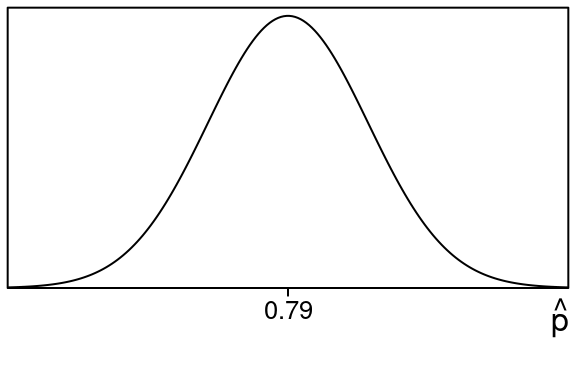
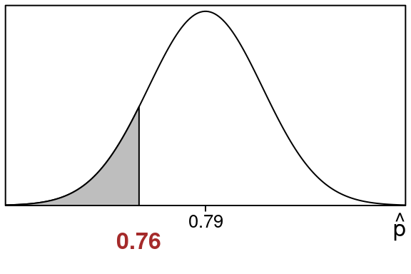
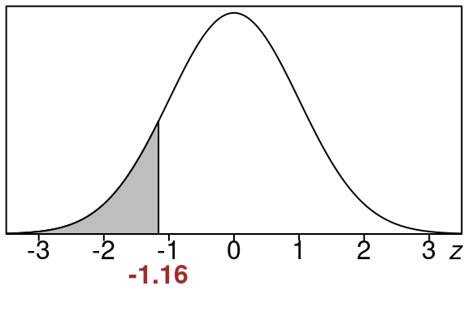
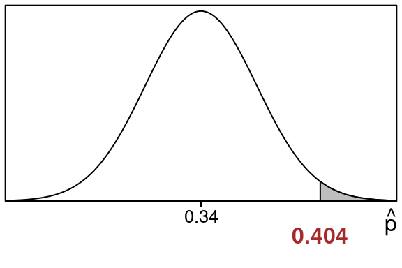
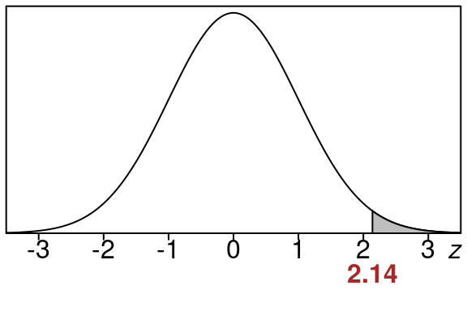
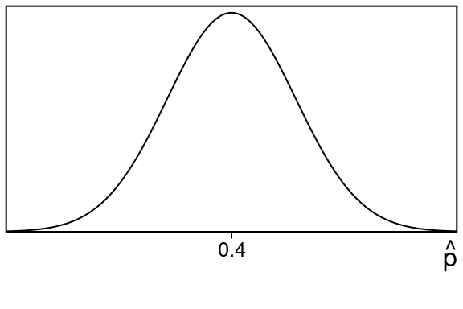
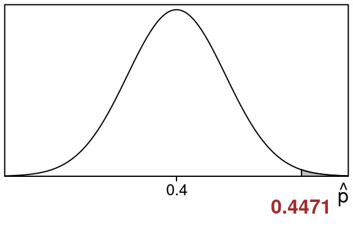
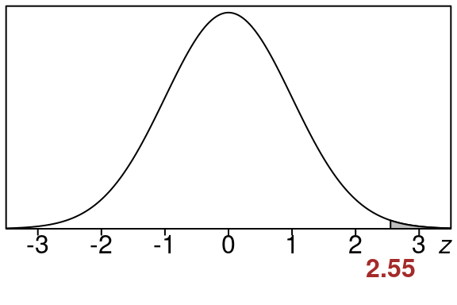
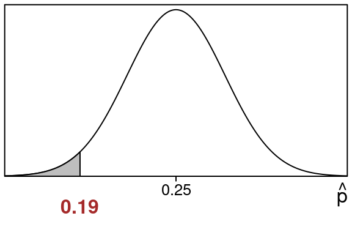
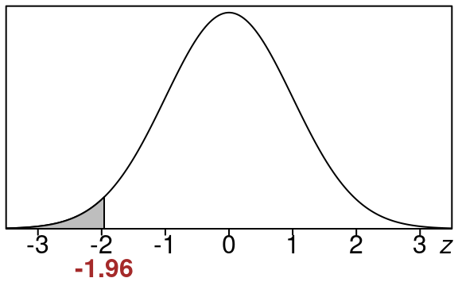

21 Hypothesis Testing - Proportions
Remember we said that typically we do not know things like parameters for populations. For example we don’t always know population proportions in situations we are interested in.
But suppose someone claims that a population proportion is some value (like 75%).
What kinds of sample proportions would we expect to get from such a population?
If you remember the Central Limit Theorem it says that in this case the sampling distribution of sample proportions would look something like this:
with the middle of it at .75.
So if this were true, if we took sample proportions we would usually wind up near .75, and more rarely we would get sample proportions that would be farther away.
We can use this idea to test the claim that the population proportion is equal to the claimed value.
This is called a hypothesis test of the (claimed) population proportion. The results from a hypothesis test will be roughly this:
- If our sample proportion is too far away we say it is evidence against the claim.
- If our sample proportion is close to the middle, we say it is no evidence against the claim.
Basically if the sample proportion is too far away from the (claimed) population proportion, we believe that claim about the population proportion may be bogus.
Now remember someone can claim anything, even something outrageous.… Like “90% of Republicans will vote for Obama” or “FIT consists of 50% male students”.
With Hypothesis Testing we can test the validity of such claims (and more reasonable claims too).
By looking at a sample, and examining how close the sample proportion is to the (claimed) population proportion we can figure out whether the claim makes sense or not.
21.1 Steps for Hypothesis Testing
Note: We use \(p_{0}\) as the notation for the proposed population proportion. You should think of this as an actual number like \(.32\) or \(.75\). It is the claimed population proportion.
1) Write down the claimed null hypothesis
\(H_{0}:\ p = p_{0}\)
This is called null hypothesis (or “H zero”) and its interpretation in words is this:
“The population proportion is equal to \(p_{0}\)”
2) Write down the alternative hypothesis
This will be one of the following types:
- \(H_{a}:\ p < p_{0}\) (This one is called a left tail test )
This one is interpreted “the population proportion is less than \(p_{0}\)”
- \(H_{a}:\ p > p_{0}\) (This one is called a right tail test )
This one is interpreted “the population proportion is greater than \(p_{0}\)”
- \(H_{a}:\ p \neq p_{0}\) (This one is called a two tail test )
This one is interpreted “the population proportion is not equal to \(p_{0}\)”
Which of these you pick depends on what you (as the researcher) want to show about the population proportion:
- If you think it is actually smaller than what was claimed, pick the left tail test
- If you think it is actually bigger than what was claimed, pick the right tail test
- If you just want to show its different from what was claimed, and you don’t care about how it is different (bigger or smaller would be fine from your viewpoint), pick the two tailed test
3) Take a (random) sample from the population and compute the sample proportion
\[ \widehat{p} = \frac{count}{\text{sample size}} = \frac{count}{n} \]
This is called the test statistic
4) Compute the z-score for the test statistic
\[ z = \frac{\widehat{p}-p_{0}}{\sqrt{\frac{p_{0}(1-p_{0})}{n}}} \]
Here you use the (proposed) population proportion \(p_{0}\) and the \(\widehat{p}\) is the sample proportion you got in the previous step.
5) Find the the P-value
The P-value is what you use to conclude your test.
Its value represents the chance that you get your sample proportion or something more extreme given that the null hypothesis is true.
In more concrete terms, it is going to be an area (left tail, right tail or both) that comes from your sample proportion.
Here is how you compute it:
- For left tail test, the \(P = \text{left tail area}\)
- For right tail test, the \(P = \text{right tail area}\)
- For two tail test, the \(P = 2(\text{area of tail})\)
To get these areas you just use the z-value from step #4 above and compute them from that.
6a) Find the conclusion from the P-value
To find your conclusion for a hypothesis test once you have your P-value you can use the following guide based on the size of the P-value:
- P-value bigger than .1, then little or no evidence against \({H_{0}}_{}\)
- P-value between .05 and .1, then some evidence against \({H_{0}}_{}\)
- P-value between .01 and .05, then moderate evidence against \({H_{0}}_{}\)
- P-value between .001 and .01, then strong evidence against \({H_{0}}_{}\)
- P-value less than .001, then very strong evidence against \({H_{0}}_{}\)
One thing to notice about the conclusions is: small P-values are evidence against the null hypothesis.
That’s because a small P-value represents a small area for a tail and that happens when the z-value (and hence the sample proportion) is more extreme.
Example 21.1 (Conclusion of Hypothesis Test)
Suppose you are doing a hypothesis test and you find out that your P-value is \(p=.047\).
Since
\[ .01 < .047 < .05 \]
This means that your conclusion is moderate evidence against the null \(H_0\).
6b) Find the conclusion from level of significance
Sometimes the conclusion part of a hypothesis test is done in a different way than the above step 6a.
If you are given a level of significance (called \(\alpha\)) you decide your conclusion in a slightly different way:
- If \(P < \alpha\), then you Reject the null hypothesis
- If \(P \geq \alpha\), then you Fail to reject the null hypothesis
Some people use the term accept the null hypothesis instead of fail to reject the null hypothesis. We take these to be equivalent.
Using the level of signifcance like this means you state your conclusion differently than in section 6a above. The \(\alpha\) is more like a cut-off for rejecting the null hypothesis in this case.
And in the case you either reject the null or fail to reject the null, and there is no othersituation (no “moderate evidence” or “very strong evidence”… just reject or not plain and simple)
Example 21.2 (Level of Significance)
Suppose you are doing a hypothesis test at the 5% level of significance,(which is \(\alpha=.05\)) and you find out that your P-value is \(P=.023\).
Since
\[ .023 < .05 \]
This means that \(P < \alpha\) and so you reject the null hypothesis.
So in this case you decide your conclusion by comparing to the given \(\alpha\) value and not by the method in section 6a. If your P-value is smaller than \(\alpha\), you reject the null hypothesis, otherwise you fail to reject the null hypothesis.
21.2 Other terminology
Sometimes you will hear people say accept the null hypothesis when \(p \geq \alpha\). This is just a different way of saying fail to reject the null hypothesis.
Finally keep this is mind as well:
- reject the null hypothesis means you believe the alternative
- failure to reject the null hypothesis means you believe the null could be true
And one more that is like a court case verdict:
- reject the null hypothesis is in favor of \(H_a\)
- failure to reject the null hypothesis is in favor of \(H_0\)
21.3 Type I and Type II Error
Let us take a minute to mention two types of errors that take place with hypothesis testing called Type I Error and Type II Error.
Here are the complete options when you’re dealing with these hypothesis tests. Recall that \(H_0\) stands for the null hypothesis. Also we will use the phrase "accept \(H_0\)" instead of "fail to reject \(H_0\)". These mean the same thing.
- If \(H_0\) is actually true and in our testing we accept \(H_0\) then there is no mistake
- If \(H_0\) is actually false and in our testing we reject \(H_0\) then there is no mistake
- If \(H_0\) is actually true and in our testing we reject \(H_0\) then that is a mistake and this is called a Type I Error
- If \(H_0\) is actually false and in our testing we accept \(H_0\) then that is a mistake and this is called a Type II Error.
Most people give a guilty vs. innocent example so we will too.
- If an innocent person is not convicted then there is no mistake
- If a guilty person is convicted then there is no mistake
- If an innocent person is convicted then that is a mistake and is called a Type I Error
- If a guilty person is not convicted then that is a mistake and is called a Type II Error
These errors can impact our daily lives in a huge way, like in the example mentioned above. More everyday examples include construction projects, our safety, and more.
21.4 Examples of Hypothesis Testing
The first example is a left tail test:
Example 21.3 (Left Tail Hypothesis Test Proportions)
Suppose someone claims a population proportion is \(79\%\) but we believe that it is less than this. To test this we take a sample proportion and get \(190\) out of \(250\). Perform a hypothesis test for this situation.
Solution:
The claim about the population proportion involves \(0.79\).
Here are the null and the alternative hypotheses:
\[\begin{align} H_0:p &= 0.79 \\ H_a:p &< 0.79 \end{align}\]
- The null hypothesis says The population proportion is \(0.79\)
- The alternative hypothesis says The population proportion is less than \(0.79\)
Before we start we check the conditions of the Central Limit Theorem to make sure we can use a normal distribution here:
\(np=(250)(0.79)= 197.5\) and \(n(1-p)=(250)(0.21)= 52.5\)
Since these are both at least \(5\) we are in good shape.
Now if the null hypothesis is true, the Central Limit Theorem says the sampling distribution of sample proportions would look like this:

Next we look at our test statistic, which is just our sample proportion:
\[\begin{equation} \hat p = \frac{count}{n} = \frac{190}{250} = 0.76 \end{equation}\]
So we want to know how likely it is to get a sample proportion of 0.76 in this situation.
In fact the P-value is just this left tail area

We want the shaded left tail area that is to the left of \(\hat p = 0.76\):
We will find this area by changing the sample proportion \(\hat p\) into a z-value and using the standard normal table.
First we need the calculation of the standard deviation since we need this in our z-value calculation:
\[\begin{equation} \small{ stdev=\sqrt{\frac{(1-p)p}{n}} =\sqrt{\frac{(1-0.79)0.79}{250}} =\sqrt{\frac{(0.21)0.79}{250}} =\sqrt{\frac{0.1659}{250}} =0.0257604 } \end{equation}\]
Now lets find the z-value using the sample proportion \(\hat p= 0.76\), the population proportion \(p=0.79\) and the standard deviation \(stdev\) we just found:
\[\begin{equation} z=\frac{\hat p-p}{stdev} =\frac{0.76-0.79}{0.0257604} =\frac{-0.03}{0.0257604} =-1.16 \end{equation}\]
So here is the equivalent left tail area for of \(z=-1.16\).

This area is the same size as our original area so we just find this one using the standard normal distribution.
We can look up the area in the standard normal z-table using \(z=-1.16\)
We go to the row that has -1.1 and then to the column that contains .06 and we see this:
| .00 | .01 | .02 | .03 | .04 | .05 | .06 | .07 | .08 | .09 | |
| -1.2 | .1151 | .1131 | .1112 | .1093 | .1075 | .1056 | .1038 | .1020 | .1003 | .0985 |
| -1.1 | .1357 | .1335 | .1314 | .1292 | .1271 | .1251 | .1230 | .1210 | .1190 | .1170 |
| -1.0 | .1587 | .1562 | .1539 | .1515 | .1492 | .1469 | .1446 | .1423 | .1401 | .1379 |
So that means the P-value we need in this situation is:
\[\begin{equation} P = \text{left tail area} =0.123 \end{equation}\]
So based on this our conclusion is that this is little or no evidence against the null hypothesis.
\[ \tag*{$\blacksquare$} \]
Now let’s see an example of a right tail test:
Example 21.4 (Right Tail Hypothesis Test-Proportions)
Suppose someone claims a population proportion is \(34\%\) but we believe that it is more than this. To test this we take a sample proportion and get \(101\) out of \(250\). Perform a hypothesis test for this situation.
Solution:
The claim about the population proportion involves \(0.34\).
Here are the null and the alternative hypotheses:
\[\begin{align} H_0:p &= 0.34 \\ H_a:p &> 0.34 \end{align}\]
- The null hypothesis says The population proportion is \(0.34\)
- The alternative hypothesis says The population proportion is more than \(0.34\)
Before we start we check the conditions of the Central Limit Theorem to make sure we can use a normal distribution here:
\(np=(250)(0.34)= 85\) and \(n(1-p)=(250)(0.66)= 165\)
Since these are both at least \(5\) we are in good shape.
Now if the null hypothesis is true, the Central Limit Theorem says the sampling distribution of sample proportions would look like this:
Next we look at our test statistic, which is just our sample proportion:
\[\begin{equation} \hat p = \frac{count}{n} = \frac{101}{250} = 0.404 \end{equation}\]
So we want to know how likely it is to get a sample proportion of 0.404 in this situation.
In fact the P-value is just this right tail area

We want the shaded right tail area that is to the right of \(\hat p = 0.404\):
We will find this area by changing the sample proportion \(\hat p\) into a z-value and using the standard normal table.
First we need the calculation of the standard deviation since we need this in our z-value calculation:
\[\begin{equation} \small{ stdev=\sqrt{\frac{(1-p)p}{n}} =\sqrt{\frac{(1-0.34)0.34}{250}} =\sqrt{\frac{(0.66)0.34}{250}} =\sqrt{\frac{0.2244}{250}} =0.02996 } \end{equation}\]
Now lets find the z-value using the sample proportion \(\hat p= 0.404\) the population proportion \(p=0.34\) and the standard deviation \(stdev\) we just found:
\[\begin{equation} z=\frac{\hat p-p}{stdev} =\frac{0.404-0.34}{0.02996} =\frac{0.064}{0.02996} =2.14 \end{equation}\]
So here is the equivalent right tail area for of \(z=2.14\).

This area is the same size as our original area so we just find this one using the standard normal distribution.
We can find the right tail area for \(z=2.14\) by finding the left tail area and then subtracting that from 1.0.
So lets look up the left tail area first. Go to the row that has 2.1 and then to the column that contains .04 and we see this:
| .00 | .01 | .02 | .03 | .04 | .05 | .06 | .07 | .08 | .09 | |
| 2.0 | .9772 | .9778 | .9783 | .9788 | .9793 | .9798 | .9803 | .9808 | .9812 | .9817 |
| 2.1 | .9821 | .9826 | .9830 | .9834 | .9838 | .9842 | .9846 | .9850 | .9854 | .9857 |
| 2.2 | .9861 | .9864 | .9868 | .9871 | .9875 | .9878 | .9881 | .9884 | .9887 | .9890 |
So that means the left tail area we need in this situation is:
\[\begin{equation} \text{left tail area} =0.9838 \end{equation}\]
This means that the right tail that we want to find is going to be this left tail subtracted from 1.0.
\[\begin{equation} P = \text{right tail area} = 1.0 - 0.9838 = 0.0162 \end{equation}\]
So based on this our conclusion is that this is moderate evidence against the null hypothesis.
\[ \tag*{$\blacksquare$} \]
21.5 Applications of Hypothesis Testing
Here is an application about selling clothes online:
Example 21.5 (Selling Clothes Online)
Your company is trying to figure out what percentage of students sell clothes online at a website like Poshmark at some point in their college career. They think that \(40\%\) of students do it. You believe it is more than this. You take a sample of \(700\) graduating seniors. You find out that \(313\) of them have sold clothes online at some point while in college. Does your evidence support the claim of your company?
Solution:
The claim about the population proportion involves \(0.4\).
Here are the null and the alternative hypotheses:
\[\begin{align} H_0:p &= 0.4 \\ H_a:p &> 0.4 \end{align}\]
- The null hypothesis says The population proportion is \(0.4\)
- The alternative hypothesis says The population proportion is more than \(0.4\)
Before we start we check the conditions of the Central Limit Theorem to make sure we can use a normal distribution here:
\(np=(700)(0.4)= 280\) and \(n(1-p)=(700)(0.6)= 420\)
Since these are both at least \(5\) we are in good shape.
Now if the null hypothesis is true, the Central Limit Theorem says the sampling distribution of sample proportions would look like this:

Next we look at our test statistic, which is just our sample proportion:
\[\begin{equation} \hat p = \frac{count}{n} = \frac{313}{700} = 0.4471429 \end{equation}\]
So we want to know how likely it is to get a sample proportion of 0.4471429 in this situation.
In fact the P-value is just this right tail area

We want the shaded right tail area that is to the right of \(\hat p = 0.4471429\):
We will find this area by changing the sample proportion \(\hat p\) into a z-value and using the standard normal table.
First we need the calculation of the standard deviation since we need this in our z-value calculation:
\[\begin{equation} \small{ stdev=\sqrt{\frac{(1-p)p}{n}} =\sqrt{\frac{(1-0.4)0.4}{700}} =\sqrt{\frac{(0.6)0.4}{700}} =\sqrt{\frac{0.24}{700}} =0.0185164 } \end{equation}\]
Now lets find the z-value using the sample proportion \(\hat p= 0.4471429\) the population proportion \(p=0.4\) and the standard deviation \(stdev\) we just found:
\[\begin{equation} z=\frac{\hat p-p}{stdev} =\frac{0.4471429-0.4}{0.0185164} =\frac{0.0471429}{0.0185164} =2.55 \end{equation}\]
So here is the equivalent right tail area for of \(z=2.55\).

This area is the same size as our original area so we just find this one using the standard normal distribution.
We can find the right tail area for \(z=2.55\) by finding the left tail area and then subtracting that from 1.0.
So lets look up the left tail area first. Go to the row that has 2.5 and then to the column that contains .05 and we see this:
| .00 | .01 | .02 | .03 | .04 | .05 | .06 | .07 | .08 | .09 | |
| 2.4 | .9918 | .9920 | .9922 | .9925 | .9927 | .9929 | .9931 | .9932 | .9934 | .9936 |
| 2.5 | .9938 | .9940 | .9941 | .9943 | .9945 | .9946 | .9948 | .9949 | .9951 | .9952 |
| 2.6 | .9953 | .9955 | .9956 | .9957 | .9959 | .9960 | .9961 | .9962 | .9963 | .9964 |
So that means the left tail area we need in this situation is:
\[\begin{equation} \text{left tail area} =0.9946 \end{equation}\]
This means that the right tail that we want to find is going to be this left tail subtracted from 1.0.
\[\begin{equation} P = \text{right tail area} = 1.0 - 0.9946 = 0.0054 \end{equation}\]
So based on this our conclusion is that this is strong evidence against the null hypothesis.
This evidence supports your claim that it is more than \(40\%\).
\[ \tag*{$\blacksquare$} \]
Here is one about testing promotion effectiveness:
Example 21.6 (Promotion Effectiveness)
Suppose a store manager thinks that \(25\%\) of its customers would upgrade to a more expensive item during a promotion. You work there as well and find the store manager's claim too high. To find out, you sample \(200\) customers and find out \(38\) of them would upgrade. Does the evidence support the store manager's claim?
Solution:
The claim about the population proportion involves \(0.25\).
Here are the null and the alternative hypotheses:
\[\begin{align} H_0:p &= 0.25 \\ H_a:p &< 0.25 \end{align}\]
- The null hypothesis says The population proportion is \(0.25\)
- The alternative hypothesis says The population proportion is less than \(0.25\)
Before we start we check the conditions of the Central Limit Theorem to make sure we can use a normal distribution here:
\(np=(200)(0.25)= 50\) and \(n(1-p)=(200)(0.75)= 150\)
Since these are both at least \(5\) we are in good shape.
Now if the null hypothesis is true, the Central Limit Theorem says the sampling distribution of sample proportions would look like this:

Next we look at our test statistic, which is just our sample proportion:
\[\begin{equation} \hat p = \frac{count}{n} = \frac{38}{200} = 0.19 \end{equation}\]
So we want to know how likely it is to get a sample proportion of 0.19 in this situation.
In fact the P-value is just this left tail area

We want the shaded left tail area that is to the left of \(\hat p = 0.19\):
We will find this area by changing the sample proportion \(\hat p\) into a z-value and using the standard normal table.
First we need the calculation of the standard deviation since we need this in our z-value calculation:
\[\begin{equation} \small{ stdev=\sqrt{\frac{(1-p)p}{n}} =\sqrt{\frac{(1-0.25)0.25}{200}} =\sqrt{\frac{(0.75)0.25}{200}} =\sqrt{\frac{0.1875}{200}} =0.0306186 } \end{equation}\]
Now lets find the z-value using the sample proportion \(\hat p= 0.19\), the population proportion \(p=0.25\) and the standard deviation \(stdev\) we just found:
\[\begin{equation} z=\frac{\hat p-p}{stdev} =\frac{0.19-0.25}{0.0306186} =\frac{-0.06}{0.0306186} =-1.96 \end{equation}\]
So here is the equivalent left tail area for of \(z=-1.96\).

This area is the same size as our original area so we just find this one using the standard normal distribution.
We can look up the area in the standard normal z-table using \(z=-1.96\)
We go to the row that has -1.9 and then to the column that contains .06 and we see this:
| .00 | .01 | .02 | .03 | .04 | .05 | .06 | .07 | .08 | .09 | |
| -2.0 | .0228 | .0222 | .0217 | .0212 | .0207 | .0202 | .0197 | .0192 | .0188 | .0183 |
| -1.9 | .0287 | .0281 | .0274 | .0268 | .0262 | .0256 | .0250 | .0244 | .0239 | .0233 |
| -1.8 | .0359 | .0351 | .0344 | .0336 | .0329 | .0322 | .0314 | .0307 | .0301 | .0294 |
So that means the P-value we need in this situation is:
\[\begin{equation} P = \text{left tail area} =0.025 \end{equation}\]
So based on this our conclusion is that this is moderate evidence against the null hypothesis.
So this does not support the claim of the store manager. It looks like you were correct.
\[ \tag*{$\blacksquare$} \]